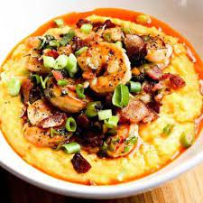

Southern Shrimp and Grits

Description
Nothing says down-home comfort quite like shrimp and grits. Bold, peppery gravy, succulent seafood, and rich sausage create a bite that's too perfect not to make. Learn how to create a restaurant-quality brunch dish in a few simple steps and have a deliciously hearty Lowcountry meal in no time.
Ingredients
- Onions
- Bell peppers
- Grits
- Shrimp
- Garlic
- Andouille sausage
Steps
- While the grits are cooking, chop vegetables.
- Cook bacon and sausage
- Saute the shrimp
- Whisk in flour, butter, and chicken stock
- Allow gravy to simmer before mixing all ingredients